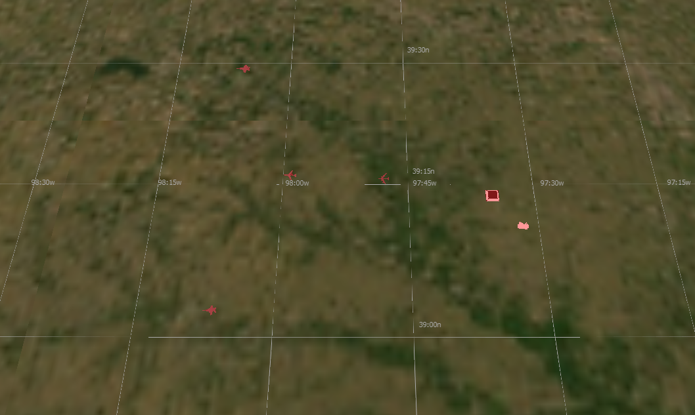

-
wargame_demo¶
Wargame Demo¶
|
|
{kind=link}
Description¶
The scenario is best experienced with multiple players to take control of the four playable teams. The four teams, while different in color, have identical assets. Assets on start up will have initial routes they will follow until commanded todo otherwise. The assets available to each of the players are; two fighters, a sam launcher, a bomber, a sensor drone and a base.
The objective is for a player to use their assets to the best of their ability to destroy the opposing player’s bases, while also defending their own.
Upon the loss of a base, a player will lose their remaining platforms in the scenario and receive a “Game Over” message. The last player with their base intact wins!
Assets¶
{kind=link}
The scenario contains two types of assets: Combative and Non-Combative
Combative Assets
Fighter
Front facing sensor
Air to Ground missile (Takes four hits to destroy an enemy base)
Air to Air missile (One hit will destroy air platforms)
Range and Vision is very limited
Bomber
Down and forward facing sensor
Air to Ground missile (One hit will destroy an enemy base)
Range and Vision are very limited
SAM Launcher
full 360 degree sensor
Surface to Air missile (One hit will destroy air platforms)
Large amounts of range
Large amounts of damage
Non-Combative
Base
You lose when this is destroyed
Cannot defend itself
Sensor drone
Cannot defend itself
large full 360 sensor
Provides significant amount of vision.
Set-Up¶
Note
It is important to configure the network settings prior to launching the scenario input files.
Here is a list of the main scenario input files and the associated Warlock configuration file for them.
File |
Description |
Config File |
|---|---|---|
blue_team.txt |
blue player startup |
BlueConfig.ini |
green_team.txt |
green player startup |
GreenConfig.ini |
red_team.txt |
red player startup |
RedConfig.ini |
purple_team.txt |
red player startup |
PurpleConfig.ini |
white_cell.txt |
non-playable character for viewing the game |
WhiteCellConfig.ini |
single_player_scenario.txt |
allows access to all three teams |
SinglePlayerConfig.ini |
Note
It is not required to use the configuration file to run this demo, but it is recommended for the best user experience.
Configuring the Network¶
To configure the DIS interface open dis_interface.txt. Then decide whether to use multicast or broadcast and configure the ip-addresses accordingly.
- Broadcasting
broadcasting <broadcast-IP-address>
- Defining a broadcast will cause packets to be sent to all hosts connected to the network.
Broadcasts are typically made up with the first six numbers of your IP following a mask.
Ex: broadcast 192.168.255.255 —> Ip:192.168.1.4 and Mask:255.255.0.0
- Multicasting
multicasting <multicast-IP-address> <interface-address>
- Defining a multicast will insure packets are sent to only intended recipients.
multicast-ip-address: An address in the range 224.0.0.0 to 239.255.255.255.
interface-address: The first six digit of your machine s IP address.
Ex: multicast 224.0.0.0 192.168
Launching¶
open a command line (bash/powershell) in the demos directory (your-path/demo/warlock)
Type the following command into the command line
./your-path/warlock.exe -ifc ./configs/<config-file> <start-up-file>
Ex: ./your-path/warlock.exe -ifc ./configs/RedConfig.ini ./red_team.txt
Launch Warlock with one of the above start up txt files found in this directory.
In Warlock click ‘File’ and select Import Configuration Options. (Import all settings)
Navigate to this directory using the file manager and open the sub-directory configs.
Select your team’s configuration.
Wait for all players to connect.
When all players are ready, click ‘OK’ in the Ready Up prompt to begin the scenario.
Tip
The single player start up file will allow vision of all 4 players and is available as a “sandbox mode” for convenient testing of custom modifications
Important Warlock Features¶
The following Warlock features will be useful to control platforms within the scenario.
Tip
The script browser will allow viewing of the tips and intel prompts at any point during the simulation.
Tip
All features mentioned are accessible via the View dropdown menu and will be enabled by default